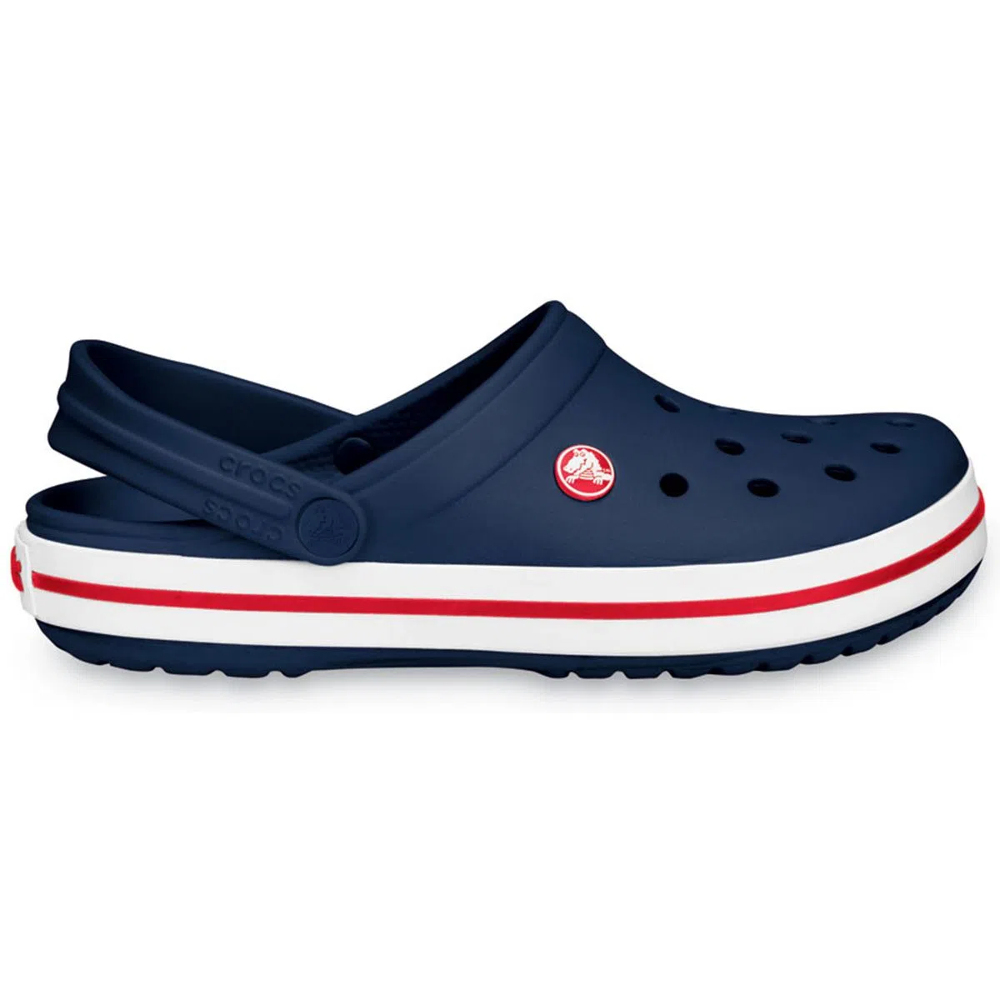
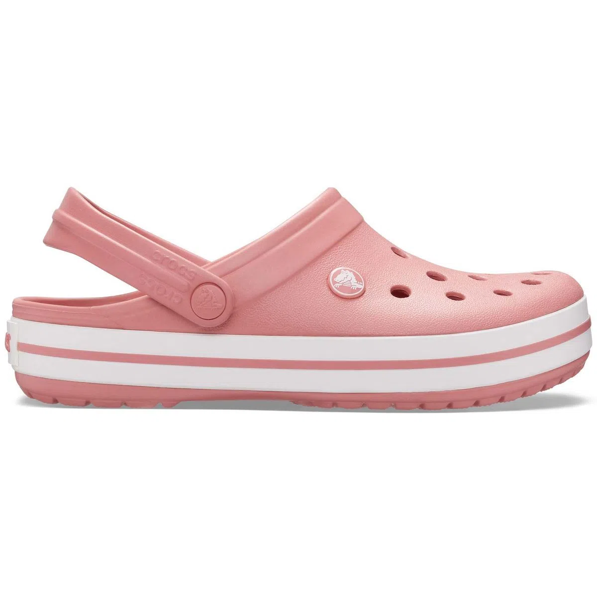
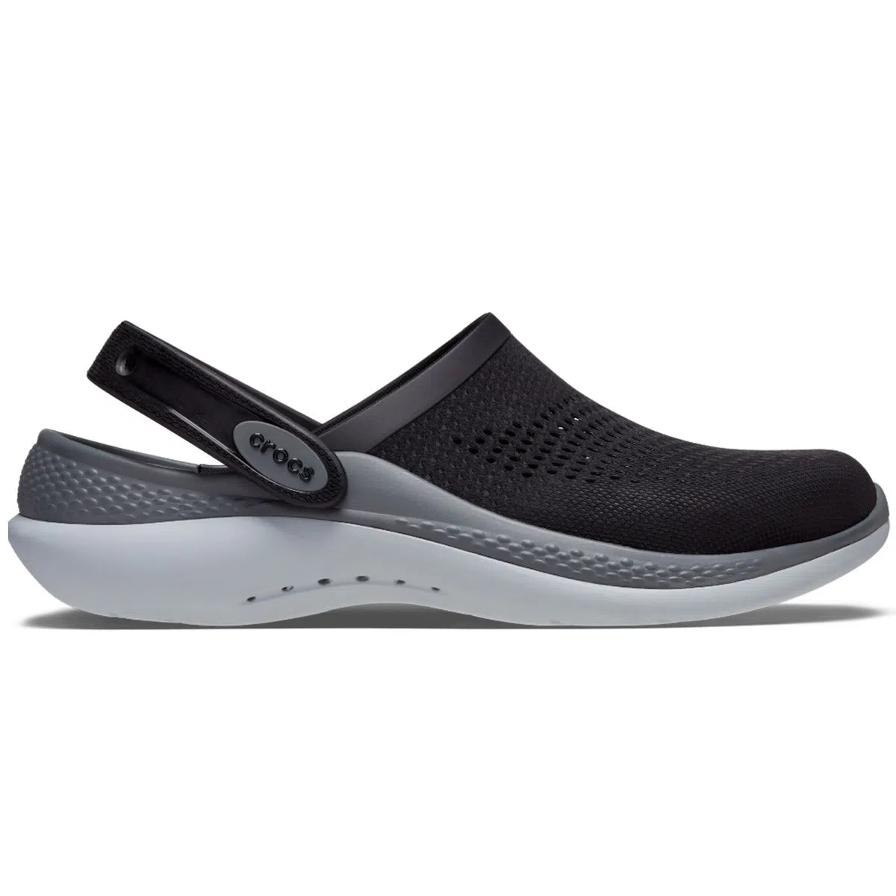
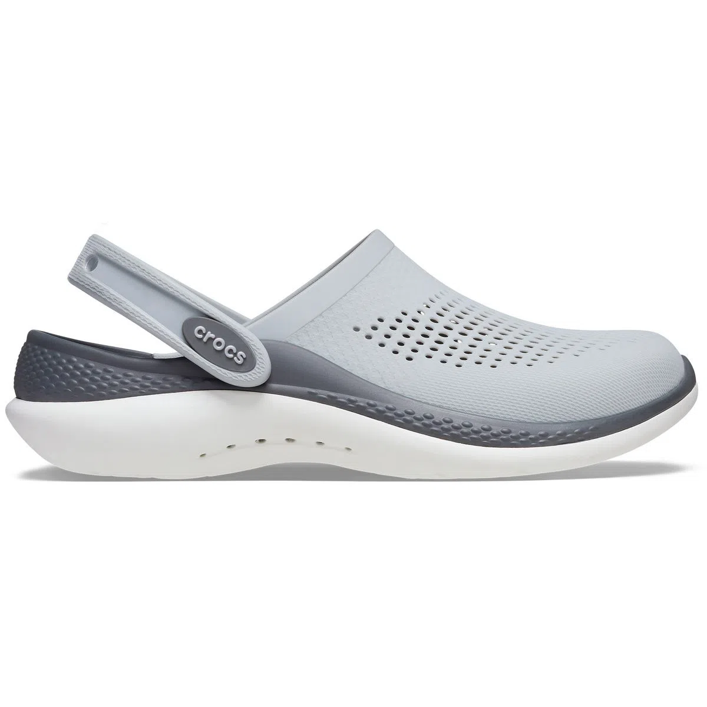
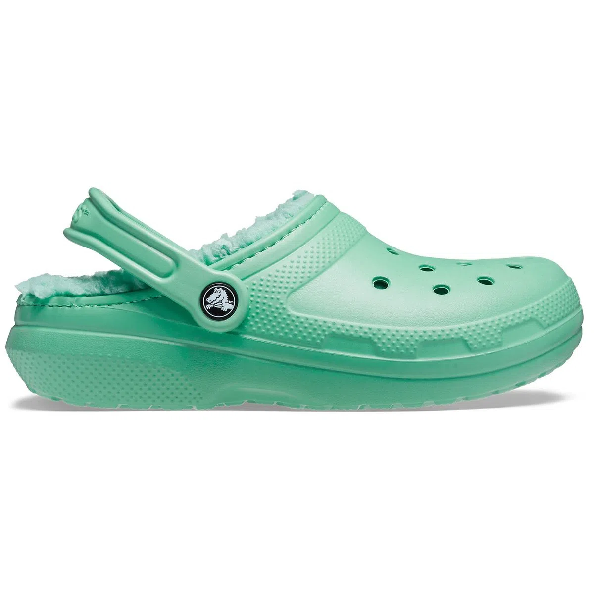
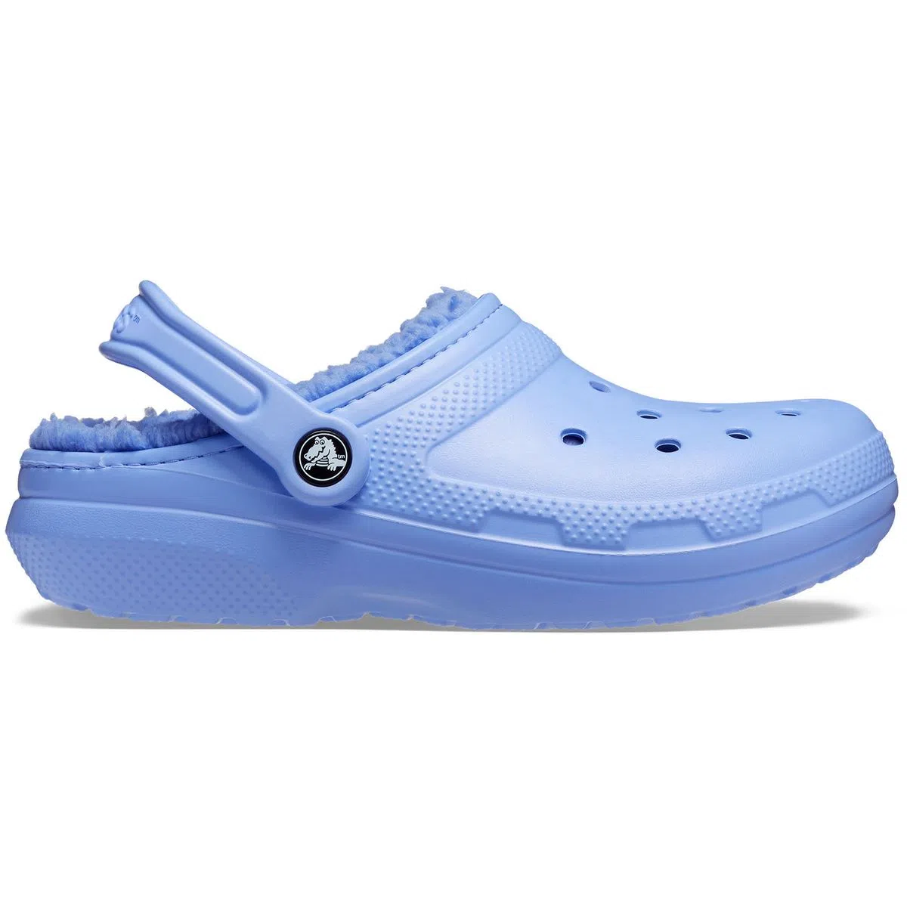
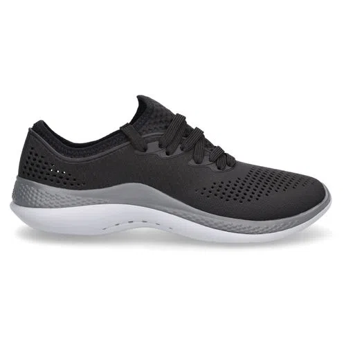
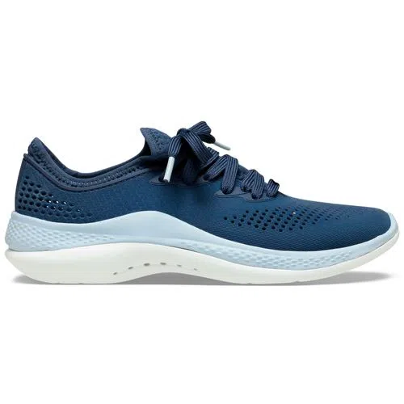

Crocs
Crocs es una marca de calzado reconocida a nivel mundial por sus icónicas sandalias de resina sintética con perforaciones en la parte superior. Fundada en 2002 en Estados Unidos, la marca se ha destacado por su diseño distintivo y su comodidad. Las sandalias Crocs son conocidas por ser ligeras, duraderas y fáciles de limpiar, lo que las ha convertido en una elección popular para actividades al aire libre y momentos de relax. A lo largo de los años, Crocs ha expandido su línea de productos para incluir una variedad de estilos, colores y colaboraciones, ganando seguidores en diferentes ámbitos de la moda y la comodidad casual.








